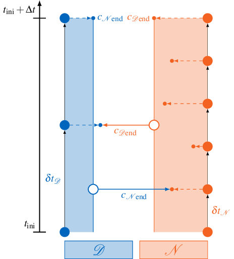
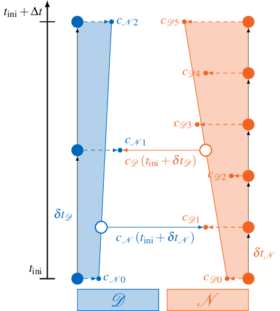

readBlockVectorData and writeBlockVectorData in the examples.
preCICE allows the participants to use subcycling – meaning: to work with individual timestep sizes smaller than the time window size. Note that participants always have to synchronize at the end of each time window. If you are not sure about the difference between a time window and a timestep or you want to know how subcycling works in detail, see “Step 5 - Non-matching timestep sizes” of the step-by-step guide. In the following section, we take a closer look at the exchange of coupling data when subcycling and advanced techniques for interpolation of coupling data inside of a time window.
Exchange of coupling data with subcycling
preCICE only exchanges data at the end of the last timestep in each time window – the end of the time window. By default, preCICE only exchanges data that was written at the very end of the time window. This approach automatically leads to discontinuities or “jumps” when going from one time window to the next. Coupling data has a constant value (in time) within one coupling window. This leads to lower accuracy of the overall simulation.1
Example for subcycling without waveform iteration
The figure below visualizes this situation for a single coupling window ranging from \(t_\text{ini}\) to \(t_\text{ini}+\Delta t\):

The two participants Dirichlet \(\mathcal{D}\) and Neumann \(\mathcal{N}\) use their respective timestep sizes \(\delta t\) and produce coupling data \(c\) at the end of each timestep. But only the very last samples \(c_{\mathcal{N}\text{end}}\) and \(c_{\mathcal{D}\text{end}}\) are exchanged. If the Dirichlet participant \(\mathcal{D}\) calls readBlockVectorData, it always reads the same value \(c_{\mathcal{N}\text{end}}\) from preCICE, independent from the current timestep.
Linear interpolation in a time window
A simple solution to reach higher accuracy is to apply linear interpolation inside of a time window to get smoother coupling boundary conditions. With this approach time-dependent functions (so-called waveforms) are exchanged between the participants. Since these waveforms are exchanged iteratively in implicit coupling, we call this procedure waveform iteration. Exchanging waveforms leads to a more robust subcycling and allows us to support higher order time stepping.1
Example for waveform iteration with linear interpolation
Linear interpolation between coupling boundary conditions of the previous and the current time window is illustrated below:

If the Dirichlet participant \(\mathcal{D}\) calls readBlockVectorData, it samples the data from a time-dependent function \(c_\mathcal{D}(t)\). This function is created from linear interpolation of the first and the last sample \(c_{\mathcal{D}0}\) and \(c_{\mathcal{D}5}\) created by the Neumann participant \(\mathcal{N}\) in the current time window. This allows \(\mathcal{D}\) to sample the coupling condition at arbitrary times \(t\) inside the current time window.
Experimental API for waveform iteration
If we want to improve the accuracy by using waveforms, this requires an extension of the existing API, because we need a way to tell preCICE where we want to sample the waveform. For this purpose, preCICE offers an experimental API. Here, readBlockVectorData accepts an additional argument relativeReadTime. This allows us to choose the time where the waveform should be sampled:
// stable API with constant data in time window
void readBlockVectorData(int dataID, int size, const int* valueIndices, double* values) const;
// experimental API for waveform iteration
void readBlockVectorData(int dataID, int size, const int* valueIndices, double relativeReadTime, double* values) const;
relativeReadTime describes the time relatively to the beginning of the current timestep. This means that relativeReadTime = 0 gives us access to data at the beginning of the timestep. By choosing relativeReadTime > 0 we can sample data at later points. The maximum allowed relativeReadTime corresponds to the remaining time until the end of the current time window. Remember that the remaining time until the end of the time window is always returned when calling precice_dt = precice.advance(dt) as precice_dt. So relativeReadTime = precice_dt corresponds to sampling data at the end of the current time window.
If we choose to use a smaller timestep size dt < precice_dt, we apply subcycling and therefore relativeReadTime = dt corresponds to sampling data at the end of the timestep. But we can also use smaller values for relativeReadTime, as shown in the usage example below. When using subcycling, it is important to note that relativeReadTime = precice_dt is the default behavior, if no relativeReadTime is provided, because preCICE cannot know the dt our solver wants to use. This also means that if subcycling is applied one must use the experimental API and provide relativeReadTime to benefit from the higher accuracy waveforms.
The experimental API has to be activated in the configuration file via the experimental attribute. This allows us to define the order of the interpolant in the read-data tag of the corresponding participant. Currently, we support two interpolation schemes: constant and linear interpolation. The interpolant is always constructed using data from the beginning and the end of the window. The default is constant interpolation (waveform-order="0"). The following example uses waveform-order="1" and, therefore, linear interpolation:
<solver-interface experimental="true" ... >
...
<participant name="FluidSolver">
<use-mesh name="FluidMesh" provide="yes"/>
<write-data name="Forces" mesh="MyMesh"/>
<read-data name="Displacements" mesh="FluidMesh" waveform-order="1"/>
</participant>
...
</solver-interface>
Usage example
We are now ready to extend the example from “Step 6 - Implicit coupling” to use waveforms. Let us assume that our fluid solver uses a midpoint rule as time stepping method. In this case, only few changes are necessary to sample the Displacements at the middle of the time window:
...
precice_dt = precice.initialize();
while (not simulationDone()){ // time loop
// write checkpoint
...
solver_dt = beginTimestep(); // e.g. compute adaptive dt
dt = min(precice_dt, solver_dt);
if (precice.isReadDataAvailable()){ // if waveform order >= 1 always true, because we can sample at arbitrary points
// sampling in the middle of the timestep
precice.readBlockVectorData(displID, vertexSize, vertexIDs, 0.5 * dt, displacements);
setDisplacements(displacements); // displacement at the middle of the timestep
}
solveTimeStep(dt); // might be using midpoint rule for time-stepping
if (precice.isWriteDataRequired(dt)){ // only true at the end of the time window
computeForces(forces);
precice.writeBlockVectorData(forceID, vertexSize, vertexIDs, forces);
}
precice_dt = precice.advance(dt);
// read checkpoint & end timestep
...
}
...
Literature
-
Rüth, B, Uekermann, B, Mehl, M, Birken, P, Monge, A, Bungartz, H-J. Quasi-Newton waveform iteration for partitioned surface-coupled multiphysics applications. Int J Numer Methods Eng. 2021; 122: 5236– 5257. https://doi.org/10.1002/nme.6443 ↩ ↩2